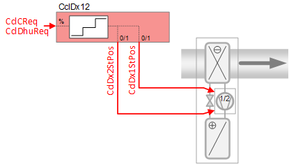
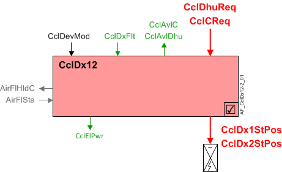

Direct expansion evaporator cooling coil 12, two binary outputs (CclDx12)
 | This application function operates a 2-stage direct expansion cooling coil device. The device stages are calculated based on request signals (from the room controllers) received for cooling and dehumidification. There is an optional binary input for an evaporator fault. This application function is NOT available for: DXR2x09 |
Required elements and how to configure them:
Element | I/O | Signal type |
|---|---|---|
CclDx1StPos "Cooling coil direct expansion evaporator position first stage" | On-board output, Cooling coil valve position | DX normally open |
Function
The figure below shows BACnet objects associated with this application function. Primary signal flow is summarized as follows:
The demand signal(s) are received (CclDhuReq / CclCReq) and processed into binary output signals for DX coil stage position (CclDx1StPos / CclDx1StPos).
Basic function: Accept request signal from associated room controller and pass it through a device mode logic switch; Output the result as a command to the BACnet object that controls the device.

| Command or request (or related) |
| Notification of condition or status, or availability |
| Device mode |
| Interlock (internal signal, not a BACnet object; see Interlocks section for additional information) |


Interlocks
Room automation interlocks are internal signals that coordinate interaction between HVAC devices. They are not visible in ABT Site or web interface, but parameters associated with them are. See comment column for hints on parameters that affect interlock functionality.
Signal | Type | Direction | Description | Comment |
|---|---|---|---|---|
AirFlSta | Boolean | In | Air flow status | No related parameters in DX coils. AirFlSta is hard-coded. |
AirFlCReq | Boolean | Out | Air flow cooling request | See Configuration section for parameters named "...AirFlCReq". |
AirFlDhuReq | Boolean | Out | Air flow dehumidification request | See Configuration section for parameters named "...AirFlDhuReq". |
AirFlHldC | Boolean | Out | Air flow hold for cooling | See Configuration section for parameters named "...AirFlHldC". |
AirManOff | Boolean | In | Air manual off |
|
Sequence
The 0-100% demand signal (cooling or dehumidification) is converted to binary output via two hysteresis switches (stage 1: 33% on, 17% off; stage 2: 83% on, 67% off). A single stage of operation has a minimum on / minimum off time of 3 minutes (3 minutes on, 3 minutes off; see TiOnMin and TiOffMin in the Configuration section).
Alarm input: Several DX safety switches can be connected to shut off the equipment, including:
- Low suction pressure
- High compressor pressure
- High refrigerant pressure
- Low refrigerant pressure
An optional binary input object picks up any DX equipment alarm switch. When the switch indicates a fault, the component sets device mode off at equipment safety priority. The "Available" signals cooling, dehumidification) also turn off. When the switch indicates no fault, the command to the device mode is disabled.
Equipment output limits: For units that use outside air, some specifications call for logic that turns off the DX below a threshold temperature. This allows the use of free cooling (cold outside air). This AF will set device mode to off at equipment safety priority when the OA temperature is below a configured cut out temperature. This also drives the "Available" signal; if device mode is off, the signal is "No".
This feature (low outside air temperature cut out) is enabled by default. The Boolean parameter that enables it is EnLockDxTOaLo (Enable lockout DX evap.at low outs.temp). See Configuration for additional information.
Note
This lock out feature requires a TOa (temperature outside air) value to be sent from a field panel. If EnLockDxTOaLo is set to Yes and a TOa sensor is not present (or signal is not valid), device mode (CclDevMod) is set to Off at equipment protection priority, shutting off the DX coil.
Minimum on/off time: When the min on or off timers are active, the staged DX cooling coil will be placed at equipment protection priority (PrPrio=5). See TiOnMin and TiOffMin in the Configuration section.
Dehumidification control: If dehumidification is used, the cooling coil dehumidification request signal (CclDhuReq) is converted into binary output signal for DX coil position.
Note
This AF does not perform loop control; its main purpose is to run commands. Loop control processes (for this AF) are managed in the "room" AF(s) that collaborate with this AF to command the end device.
Device mode: The input signal for device mode is a multistate value.
CclDevMod supports the following states:
- Off
- Control mode (modulation)
- Fully open
Cooling available status: When the cooling coil is available for cooling, the binary output signal for "Cooling coil available for cooling" (CclAvlC) will be "Yes" (available). CclAvlC is used by the system to regulate cooling resources. For example, if there is a call for cooling but the cooling coil is not available because it is already at maximum capacity (because device mode is fully open), then CclAvlC will signal "No" and the next available cooling resource in the temperature control sequence will be activated.
For cooling available status to be "Yes", device mode must equal "Control mode" (modulation).
Dehumidification available status: When the cooling coil is available for dehumidification, the binary output signal for "Cooling coil available for dehumidification" (CclAvlDhu) will be "Yes" (available). For the status to be "Yes", device mode must equal "Control mode" (modulation).
DX Cooling compressor power: The nominal electric power usage of the compressor is provided for energy monitoring and coordination with other devices. When the DX coil is on, the compressor electric power (CclElPwr) is equal to the cooling power of the cooling stages that are active. CclElPwr equals zero when the DX coil is off.
Configuration
 Parameters
Parameters
Description | Parameter | Default value |
|---|---|---|
Enable fault input 0:No | EnFltIn | 0:No |
Nominal electric power | NomElPwr | 0.4 [kW] |
Switch-on/-off times | ||
Min.switch-on time | TiOnMin | 3 [min] |
Min.switch-off time | TiOffMin | 3 [min] |
Low outside air temperature lockout | ||
Enable lockout DX evaporator at low outside air temperature ▶ Enables the lock out feature that keeps the DX from activating if outside temperature is low enough to cause freezing on the coil. 0:No | EnLockDxTOaLo | 1:Yes |
Lockout DX evaporator at low outside air temperature | LockDxTOaLo | 4 [°C] |
Outside air temperature hysteresis for lockout DX evaporator | HysTOaLockDx | 1 [K] |
Interlocks | ||
Switch-on point for air volume flow hold cooling | SwiOnAirFlHldC | 33 [%] |
Hysteresis for air volume flow hold cooling | HysAirFlHldC | 16 [%] |
Switch-off delay for hold signal for air volume flow cooling | DlyOffAflHldC | 0 [s] |
Switch-on point for air volume flow cooling request | SwiOnAirFlCReq | 33 [%] |
Hysteresis for air volume flow cooling request | HysAirFlCReq | 16 [%] |
Switch-on delay for air volume flow cooling request | DlyOnAirFlCReq | 0 [s] |
Switch-on point for air volume flow dehumidification request | SwiOnAflDhuReq | 33 [%] |
Hysteresis for air volume flow dehumidification request | HysAirFlDhuReq | 16 [%] |
Switch-on delay for air volume flow dehumidification request | DlyOnAflDhuReq | 0 [s] |
Switch-off delay for air volume flow dehumidification request | DlyOfAflDhuReq | 0 [s] |
Internal settings – do not change | ||
Temperature unit | TUnit | [°C] |
Temperature difference unit | TDiffUnit | [K] |
Interface
Interface | Description | Type | Ref. | Owned by |
|---|---|---|---|---|
CclDx1StPos | Cooling coil direct expansion evaporator position first stage 0:Off | BO | ◉ | Room segment / Device |
CclDx2StPos | Cooling coil direct expansion evaporator position second stage 0:Off | BO | ◉ | Room segment / Device |
CclDxFlt | Cooling coil direct expansion evaporator fault 0:Normal | BI | ◉ | Room segment / Device |
CclDevMod | Cooling coil device mode 1:Off | MPrcVal | ● | - |
CclCReq | Cooling coil cooling request | ACalcVal | ● | - |
CclDhuReq | Cooling coil dehumidification request | ACalcVal | ● | - |
CclAvlC | Cooling coil available for cooling 0:No | BCalcVal | ● | - |
CclAvlDhu | Cooling coil available for dehumidification 0:No | BCalcVal | ● | - |
CclElPwr | Cooling coil electric power | ACalcVal | ● | - |
Engineering and commissioning
Boolean parameter EnLockDxTOaLo (Enable lockout DX evap.at low outs.temp.) is set to Yes by default. This lock out feature requires a TOa (temperature outside air) value to be sent from a field panel. If EnLockDxTOaLo is set to Yes and a TOa sensor is not present (or signal is not valid), device mode (CclDevMod) is set to Off at equipment protection priority, shutting off the DX coil. To disable this feature, either for testing purposes during startup or for system design needs, set EnLockDxTOaLo to No.
The AF that operates the DX coil(s) works with the room cooling feedback controller, and is compatible with the feedback configured for PID or staged response. In either case, the timing characteristics needed to prevent frequent switching are implemented by tuning the feedback controller. Additionally you can adjust min on / min off times (TiOnMin and TiOffMin) and delay parameters in the Configuration section. Set parameters to prevent short cycles that might damage the equipment even if occurring only occasionally. But note that DX coil timing is closely related to the level of temperature error that the controller allows before turning the coil on and off.
Staged vs. PID control
Staged control operates with relatively consistent, selectable switch on and switch off points. PID operates with relatively consistent temperature averaged over time.
Troubleshooting tip: Why is the DX turned off at equipment safety priority... Probably because the fan is off. Check that first.